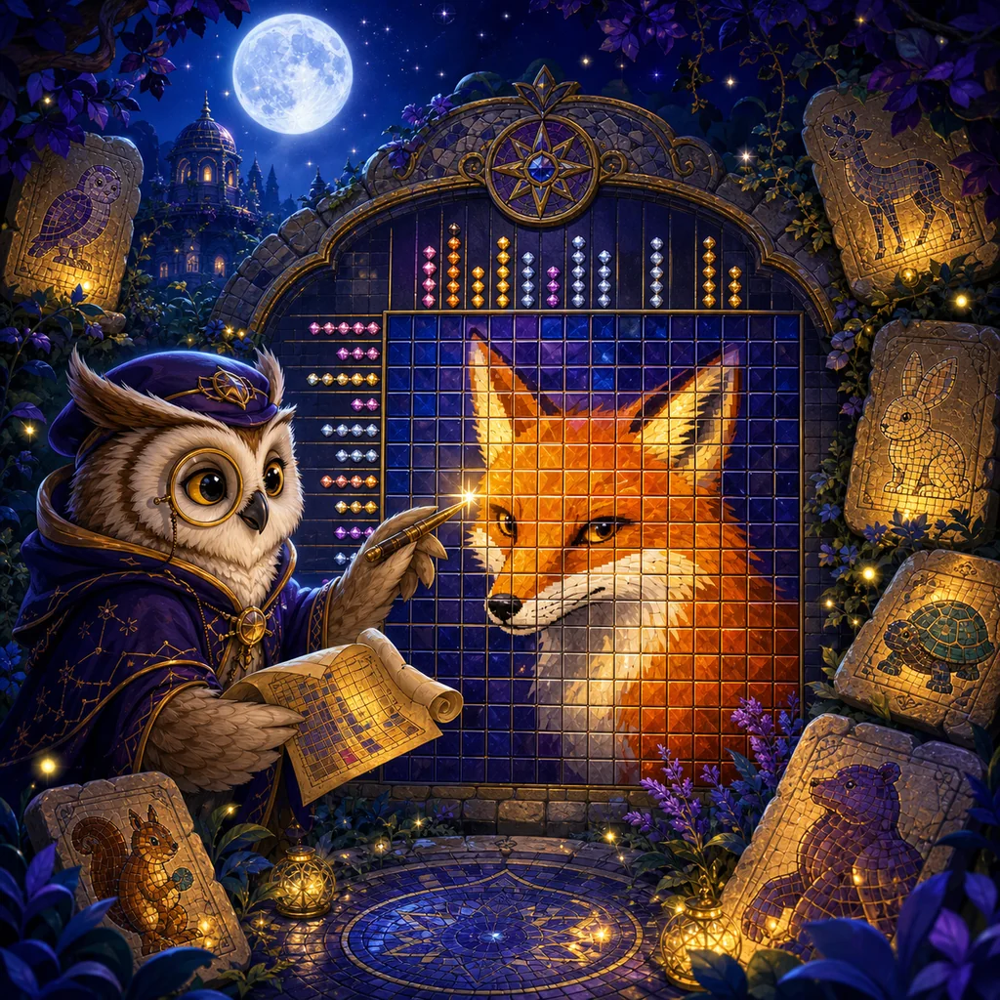

How to play
- Read each row and column run from the outer edge inward.
- Use Paint for confirmed cells and Mark for confirmed empty cells.
- Complete every run to reveal the hidden animal.

Opening the mosaic archive…Read every row and column clue to uncover a hidden animal portrait.
0 / 30Paint cells that must be filled, cross cells that must stay empty, and use intersecting clues to solve each mosaic without guessing.
Six chapters grow from guided 5×5 signs to deduction-rich 12×12 portraits.
Drag the rail. The centred glowing card is selected.
Use the clues to reveal every filled cell.
A clue such as 3 1 means a run of three filled cells, at least one empty cell, then one filled cell.
Your completed progress is safe. This attempt will restart.
The hidden animal mosaic is complete.